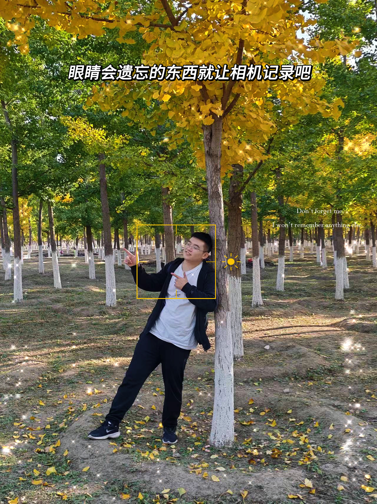

张驰 (Chi Zhang)
 |
研究生, 中共党员 |
关于我
本人本科毕业于北京理工大学计算机学院，专业为计算机科学与技术。目前在北京理工大学计算机学院攻读计算机科学与技术硕士学位，师从罗兆经老师和张美慧老师。本人目前已在北京理工大学智能信息技术实验室开始进行相关的研究工作。
我的研究兴趣主要包括: 自然语言处理分析，生命健康大数据，医疗数据挖掘 等。
教育经历
|
|
硕士 北京理工大学 (2023.9 ~ 2026.6)
|
|
|
本科 北京理工大学 (2019.9 ~ 2023.6)
|
实习经历
联想研究院 NLP算法实习(2024.4 ~ 2024.7)
|
学术论文
史继筠，张驰，王禹桥，罗兆经，张美慧. "基于知识辅助的结构化医疗报告生成", WISA 2023, 计算机科学
Jiyun Shi, YuQiao Wang, Chi Zhang, Zhaojing Luo, Chengliang Chai, Meihui Zhang: DMRNet: Effective Network for Accurate Discharge Medication Recommendation. IEEE International Conference on Data Engineering (ICDE)(2024)(CCF-A类).
Zhaojing Luo, Chi Zhang, Hao Wang, Jiyun Shi, Meihui Zhang: KEIM: Knowledge Graph Empowered Interpretable Model for Diagnosis Prediction. International Conference on Database Systems for Advanced Applications(DASFAA)(2024)(CCF-B类).
Chi Zhang, Tao Chen, Jiehao Chen, Hao Wang, Jiyun Shi, Zhaojing Luo, Meihui Zhang: Cost-Effective Framework with Optimized Task Decomposition and Batch Prompting for Medical Dialogue Summary(CIKM)(2024)(CCF-B类).
审稿人
-
CIKM 2024 Emergency Reviewer
个人爱好
-
骑行、吉他、徒步、桌游、明日方舟、王者荣耀
同好可以一块玩~~~~
个人照片


